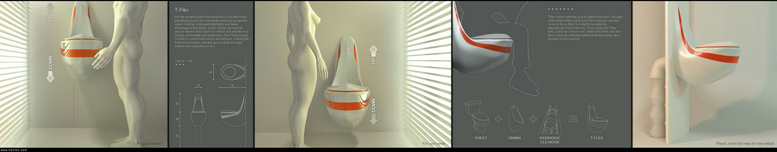

--

We are progressively moving toward a society where everything should be immediate and increasingly the space must be managed intelligibly and taken advantage to the fullest. In this sense, we need to design objects that match our needs and desires in a simple, immediate and ergonomic. The T-Flex comes in order to meet those needs and desires, making the toilet more flexible, versatile and so that we might explore new experiences in it.
T-flex comes with the goal to gather the basic concepts of the toilet, of the urinal and of the hydraulic elevator so as to focus them in order to recreate the experiences lived in the WC. Thus, basically T-flex turns out to be a two in one, Toilet and Urinal, but also turns out to be a flexible toilet that fits the needs and desires of each person.